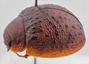
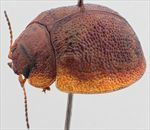
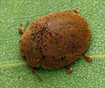
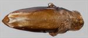
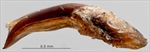
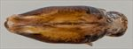
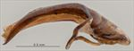
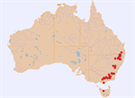

Click on images to enlarge
{kind=link}

Female, Thalgarrah, N.E. New South Wales
{kind=link}

Male, Sawmill Settlement, Victoria
{kind=link}

Male, Ballandean, S.E. Queensland
{kind=link}

Aedeagus, dorsal view (Emmaville, N.E. New South Wales)
{kind=link}

Aedeagus, lateral view (Emmaville, N.E. New South Wales)
{kind=link}

Aedeagus, dorsal view (Sawmill Settlement, Victoria)
{kind=link}

Aedeagus, lateral view (Sawmill Settlement, Victoria)
{kind=link}

Distribution
Name
Trachymela verrucosa (Marsham)
Reference specimen
1999-0046a, Emmaville, NE New South Wales.
Adult Description
Length: ♂ 5.5–6.7 mm (n=48), ♀ 6.1–7.3(7.7) mm (n=32).
Colouration:
- Head: uniformly mid-brown to dark-brown or reddish-brown, rarely with some black infuscation around posterior of eyes, mandibles with dark-brown to black tips; labrum concolorous or slightly paler; antennomeres 1–4 uniformly straw-brown, 5–11 darker, rarely much darker, individual antennomeres almost invariably darker distally than at base.
- Pronotum: brown, concolorous with head, infrequently with black macula in centre of each foveal depression.
- Scutellum: brown, concolorous with pronotum, sometimes with broad, dark border, or uniformly darker (sometimes much darker) brown than pronotum.
- Elytra: brown, concolorous with pronotum, with small, round, raised black tubercles scattered quite evenly over much of surface of disc except median depression, less often these tubercles are confined to apical third, rarely absent, punctures are concolorous with interstices, humeral callus black.
- Venter & Legs: venter very dark-brown or black with legs concolorous, distal segments sometimes slightly paler, inside surface of elytral epipleura brown.
- Cuticular Wax: brown, moderately densely and quite evenly distributed over pronotum and elytra.
Morphology:
- Head: body rounded, greatest height viewed laterally is clearly in front of middle of elytral margin; punctures moderately sized (pd ≈ 2–2.5×ef), often quite evenly and densely distributed, sometimes rugulose interstices result in less even distribution; antennae very short (AL/BL: ♂ 39–45%, ♀ 30–37%), filiform, outer segments noticeably flattened.
- Pronotum: almost evenly curved transversely with lateral margins slightly explanate, foveal depression shallow usually with a clearly defined and almost round elevated area near middle, puncturation clearly impressed, similar to or slightly more coarse than those on head and rather evenly distributed in discal area, becoming much coarser from foveal depression to lateral margins, much finer and inconspicuous punctures scattered among them, interstices smooth to somewhat rough in discal area, never so rough as to obscure punctures; thickened front margins smoothly join thinner lateral margins in a smoothly rounded right-angle, with lateral margin almost straight or barely curving for about 80% of length towards rear margin, then curving more strongly towards posterio-lateral angle.
- Scutellum: smooth or slightly rough surface, if punctured, punctures are very sparse and usually very fine.
- Elytra: surface evenly curved transversely over discal region, sometimes noticeably explanate at margins, lightly curved longitudinally in anterior half, then slightly more strongly curved, a very shallow depression extends across surface just in front of middle, punctures large and distinct and relatively evenly distributed between the verrucae and set deeply among the network of raised interstices, smaller punctures are scattered among them, small round verrucae, sometimes with a small puncture in centre, are scattered quite evenly over most of elytral surface except antero-median depression, some of these have a tendency to align in longitudinal rows, a short row of about three verrucae extending from base of elytron about halfway between scutellum and humeral callus towards antero-median depression is frequently joined into a continuous ridge, sometimes (mostly in the south of the distribution) these verrucae are confined to apical third of elytra, rarely completely absent, surface continuous under humeral callus; vertical extension of epipleura considerable (HCE/PW = 0.35–0.41).
- Venter: prosternal process variable, relatively wide throughout or narrow anteriorly and widening evenly towards posterior, lightly closed anteriorly, short setae sparsely distributed over prosternal process and mesoventrite, a single seta on anterior and median trochanter; front edge of metaventrite beveled, truncate; inner edge of epipleurae lacking setae.
Male Genitalia (Aedeagus):
- Dimensions: short (LPE = 22–27% BL), lanceolate.
- Dorsal view: shaft widest at rear with sides converging very gradually for a short length then more strongly in a continuous arc to tip, dorsal surface membranous in centre with a very faint dorso-median channel present, widely and darkly sclerotized laterally in posterior two-thirds of central section the sclerotization thinning towards apex, ostium very small, tip triangular.
- Lateral view: shaft evenly and lightly curved from base towards apex until close to apex where there is a slight downward curve, tip deflexed.
Immature Stages
Unknown.
Similar species
- Ta16: this species is very similar to Ta65, especially in the distribution and density of verrucae on the elytra. It may be distinguished from Ta65 by the darker colouration of the scutellum and ventral surface, as well as the dark-brown colouration of internal surface of epipleura.
- Ta19: another very similar species which may be distinguished by the less regular distribution of verrucae and the lighter ventral colouring. The aedeagi of the two species are very similar, with the dark lateral margins contrasting with the light-brown interior dorsal surface. However, where in Ta19, these margins are either sub-parallel or only slightly converging from base to middle of central section, in Ta65 the convergence is much more pronounced.
- Ta32: very difficult to distinguish especially females of these species. Ta65 tends to be darker ventrally than Ta32.
- Ta66: generally darker dorsally than Ta65 due to the space between verrucae being dark brown or black. In addition, the inner surface of epipleura is usually (though not always) partially black.
Notes
- Taxonomy: Identification as Trachymela verrucosa (Marsham) is by comparison with Marsham’s description and Blackburn’s key characters.
- Distribution & Abundance: Ta65 is a widely distributed species in Eastern Australia, and where it is found can be abundant at times.
- Host Associations: It is found on the box-group of Eucalyptus (Symphyomyrtus : Adnataria), primarily Eucalyptus melliodora, over much of its range. However, specimens from southern Australia are more often found on Maidenaria group of eucalypts (with records from E. viminalis, E. rubida, and E. kitsoniana).
- Morphological Variation: Several specimens from southern Australia whose elytral verrucae are differently distributed (less evenly and usually much more sparsely than is typical for Ta65 – they may even be completely absent in rare examples) and not as well-defined, are included in this entity. However, this trait does also appear in a few specimens from further north in the distribution (for example, [1999-0616a] from the Armidale area). The aedeagus tends to be more acutely pointed in these southern specimens, with its lateral edge sometimes very slightly concave towards the apex and the dorso-median channel usually extends almost to the basal sulcus. The aedeagus LPE value for many of these specimens is below the expected value for typical Ta65 specimens and it tends to be more strongly curved. The same is true of the Tasmanian specimens [2018-154] and [2018-158]. Though the data is limited, it appears that a different group of hosts may be being utilized by the southern group (there are records from E. viminalis, E. rubida and E. kitsoniana, all Maidenaria). All this suggests that this entity may consist of two species: a primarily northern species that utilises Adnataria eucalypts, and a mainly southern species that feeds on species in the Maidenaria eucalypt section. Note that the Armidale specimen referred to earlier was recorded from a “box-barked eucalypt”. The exceptionally large specimen [25-052382] from Mt Kaputar in NE New South Wales is placed here and is in most respects like a typical Ta65. However, the elytral texture is slightly different, and the verrucae are less distinct and more irregular in distribution than is typical in Ta65.
Copyright © 2026. All rights reserved.